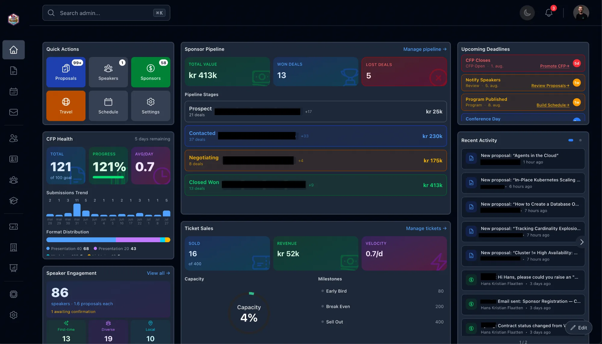
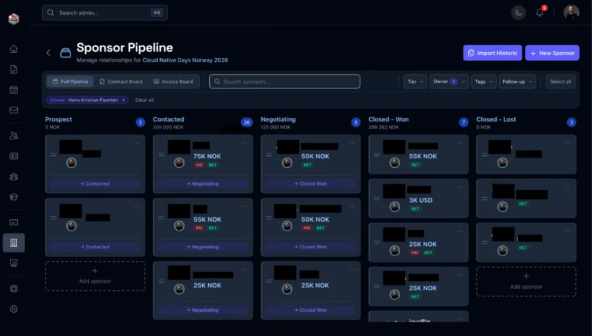
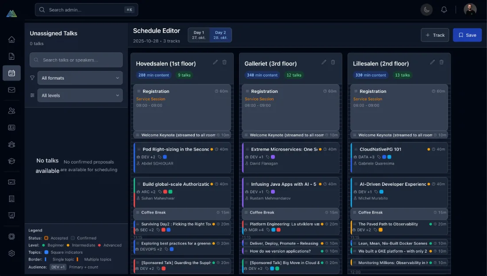
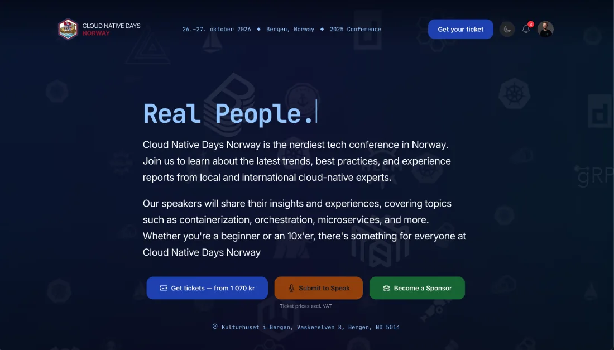
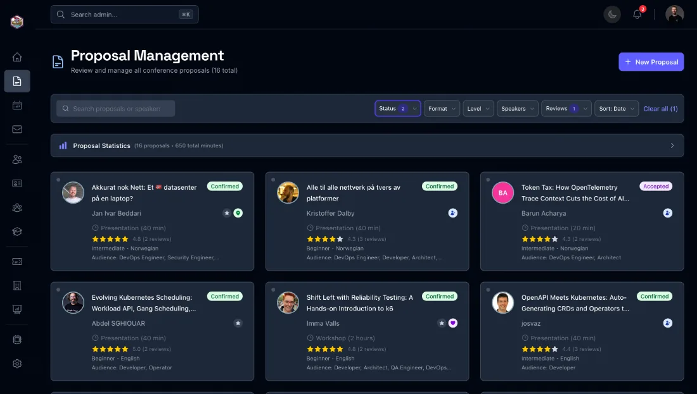
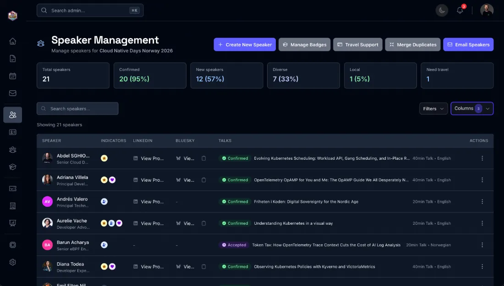
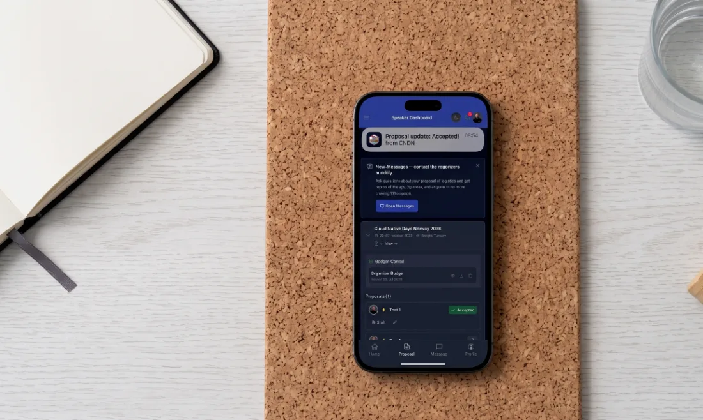

Run your conference.
Launching soon
The batteries-included platform for community tech conferences — website, CFP, program, speakers, sponsors. Built in Bergen, by people who run one.
konf.app · konf.run
Konf is built for community-run tech conferences — the ones organized on evenings and weekends by people who also have day jobs. If your event grew out of a meetup and now needs a real website, a real CFP, and a sponsor process that isn't a spreadsheet, this is for you.
Running a yearly conference means herding speakers, sponsors, attendees, a venue and your own team — across email threads, chat pings, shared docs and versioned spreadsheets. Konf pulls the whole swarm into one system, and next year it all carries over.
Konf isn't a mockup — it runs a real conference today. A tour of the actual product:

screenshot landing soon
screenshot landing soon
screenshot landing soon
screenshot landing soon
screenshot landing soon
screenshot landing soon
screenshot landing sooncfpSubmissions, reviews, ratings, acceptance flowprogramDrag-and-drop schedule across tracks and slotswebsiteOwn domain, theming, typed front-page buildersponsorsCRM, tiers, follow-ups, activity timelinecontractsGenerated sponsorship agreements, e-signingbudgetsoonIncome live from tickets + sponsors, expenses, scenariosspeakersMessaging, travel support, workshop logisticsbadgesSigned Open Badges 3.0, Credly-compatiblepwa + pushInstallable app, schedule-change notificationsticketingCheckin and Tito via a provider interfaceemailTemplated speaker and sponsor email, your domaincli + apisoonConference ops from the terminal; build on the APIEvery community conference ends up building the same duct-tape stack: a CFP tool here, a website builder there, ticketing embedded from somewhere else, sponsors in a spreadsheet, contracts in a PDF tool, updates in a newsletter product. Six subscriptions, six logins, and none of them talk to each other.
The value is the glue. When a talk is accepted in Konf, it appears in the program, on the website, in the schedule PWA, and in the speaker's messaging thread — automatically. When a sponsor signs, the logo lands on the front page and the invoice hook fires. Integrated beats assembled, and it's priced for community budgets: free for community events, not six SaaS subscriptions deep.
Konf is developed in the open and battle-tested on a real conference. Here's an honest map of where it stands.
Every conference on Konf strengthens the others. These are the network benefits we're building toward for conferences that join early:
your-domain.tldopen-badges/3.0pwa + pushticketingpage-builderbattle-testedNo mythology, no backronym. It's the word we already use, now with a platform behind it. Made in Bergen, Norway — where conferences happen despite the weather.
Konf already runs a real conference today; what's launching soon is opening it up to yours. We're lining up a first wave of community conferences for concierge onboarding: we sit down with your organizing team and get your website, CFP and sponsor pipeline running together. Free for community conferences — you pay when your event is commercial.
Interested, or just curious? Get in touch and we'll keep you posted — no list-spam, just a hei when it's your turn.